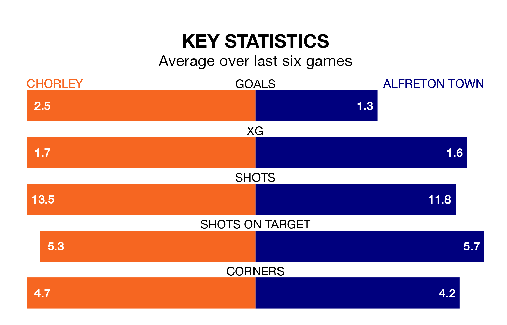

Chorley host Alfreton Town at the Chorley Group Victory Park Stadium on late Tuesday on the back of three consecutive wins in National League North.
Chorley have picked up 13 points from their last six games, and they face a Reds side who also won their last match, and have collected eight points from the last possible 18.
With 48 goals in 27 games so far this season, Alfreton are the league's third-highest scorers with 1.8 goals per game. And they are conceding at an average rate, letting in 34 goals at a rate of 1.3 per game.
Chorley are also above average scorers, with 1.7 goals per game, compared to a league average of 1.3. They have conceded 1.1 goals per game.
In the last 10 years, Chorley and Alfreton have played each other on 14 occasions. Chorley won six of them, Alfreton five, and they drew three times.
On average, the Magpies scored 1.2 goals and the Reds 1.0 in those matches.
Their last meeting was on January 6, when Alfreton won 2-0 at home.
Town are eighth in the table after 27 games, of which they have won 13 and drawn seven, earning 46 points.
The Magpies are two places behind the Reds in 10th, with 12 wins and eight draws putting them on 44 points.
Chorley's last match was on December 26, a 2-0 win against Spennymoor Town.
Alfreton beat Buxton 2-1 last time out, also on December 26.
Updated: 09:21 (UTC), 30/01/24